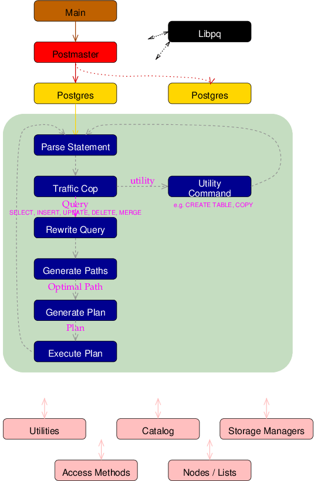

A query comes to the backend via data packets arriving through TCP/IP or Unix Domain sockets. It is loaded into a string, and passed to the parser, where the lexical scanner, scan.l, breaks the query up into tokens(words). The parser uses gram.y and the tokens to identify the query type, and load the proper query-specific structure, like CreateStmt or SelectStmt.
The statement is then identified as complex (SELECT / INSERT / UPDATE / DELETE) or simple, e.g CREATE ROLE, ANALYZE, etc. Simple utility commands that do not require the executor are processed by statement-specific functions in the commands module. Complex statements require more handling.
The parser takes a complex query, and creates a Query structure that contains all the elements used by complex queries. Query.jointree holds the FROM and WHERE clauses, which is filled in by transformFromClause() and transformWhereClause(). Each table referenced in the query is represented by a RangeTblEntry, and they are linked together to form the range table of the query, which is generated by transformFromClause(). Query.rtable holds the query's range table.
Certain queries, like SELECT, return columns of data. Other queries, like INSERT and UPDATE, specify the columns modified by the query. These column references are converted to TargetEntry entries, which are linked together to make up the target list of the query. The target list is stored in Query.targetList, which is generated by transformTargetList().
Other query elements, like aggregates(SUM()), GROUP BY, and ORDER BY are also stored in their own Query fields.
The next step is for the Query to be modified by any VIEWS or RULES that may apply to the query. This is performed by the rewrite system.
The optimizer uses the Query structure to determine the best table join order and join type of each table in the RangeTable, using Query.jointree(FROM and WHERE clauses) to consider optimal index usage.
The path module then generates an optimal Plan, which contains the operations to be performed to execute the query.The Plan is then passed to the executor for execution, and the result returned to the client. The Plan is actually as set of nodes, arranged in a tree structure with a top-level node, and various sub-nodes as children.
There are many other modules that support this basic functionality. They can be accessed by clicking on the flowchart.
{%endblock%}